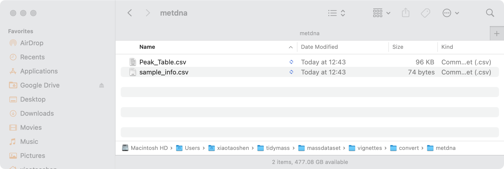

Interoperation with other tools
Xiaotao Shen
Created on 2022-05-16 and updated on 2026-03-02
Source:vignettes/interoperability_with_other_tools.Rmd
interoperability_with_other_tools.RmdIntroduction
To make tidyMass and massdataset is more
interoperability with other toolts which have beed developed for omics
data processing and analysis, we provide several functions that could
convert “mass_dataset” and data formats that required by other tools. In
the meanwhile, functions that convert other data formats to
mass_dataset are also provided.
MetDNA
MetDNA is a web-based tool for metabolite annotation
using metabolic reaction network (http://metdna.zhulab.cn/). Users can eaisy convert
mass_dataset to files that required for
MetDNA.
library(massdataset)
library(tidyverse)
data("expression_data")
data("sample_info")
data("sample_info_note")
data("variable_info")
data("variable_info_note")
object =
create_mass_dataset(
expression_data = expression_data,
sample_info = sample_info,
variable_info = variable_info,
sample_info_note = sample_info_note,
variable_info_note = variable_info_note
)
object
#> --------------------
#> massdataset version: 0.99.1
#> --------------------
#> 1.expression_data:[ 1000 x 8 data.frame]
#> 2.sample_info:[ 8 x 4 data.frame]
#> 8 samples:Blank_3 Blank_4 QC_1 ... PS4P3 PS4P4
#> 3.variable_info:[ 1000 x 3 data.frame]
#> 1000 variables:M136T55_2_POS M79T35_POS M307T548_POS ... M232T937_POS M301T277_POS
#> 4.sample_info_note:[ 4 x 2 data.frame]
#> 5.variable_info_note:[ 3 x 2 data.frame]
#> 6.ms2_data:[ 0 variables x 0 MS2 spectra]
#> --------------------
#> Processing information
#> 1 processings in total
#> create_mass_dataset ----------
#> Package Function.used Time
#> 1 massdataset create_mass_dataset() 2026-03-02 09:28:11
export_mass_dataset4metdna(object = object,
path = "convert/metdna")
#> NULLThe files will be exported in the folder “convert/metdna”.

Peak table.
 sample_info.
sample_info.

SummarizedExperiment
The SummarizedExperiment class is used to store
rectangular matrices of experimental results, which are commonly
produced by sequencing and microarray experiments. This data structure
is supported by lots of tools in omics files in R environment. We can
use the convert_mass_dataset2summarizedexperiment function
to convert mass_dataset to
SummarizedExperiment class.
Please install SummarizedExperiment first.
if (!requireNamespace("BiocManager", quietly = TRUE)) {
install.packages("BiocManager")
}
if (!requireNamespace("SummarizedExperiment", quietly = TRUE)) {
BiocManager::install("SummarizedExperiment")
}
library(SummarizedExperiment)
se_object <-
convert_mass_dataset2summarizedexperiment(object = object)
library(SummarizedExperiment)
se_object
#> class: SummarizedExperiment
#> dim: 1000 8
#> metadata(0):
#> assays(1): counts
#> rownames(1000): M136T55_2_POS M79T35_POS ... M232T937_POS M301T277_POS
#> rowData names(3): variable_id mz rt
#> colnames(8): Blank_3 Blank_4 ... PS4P3 PS4P4
#> colData names(4): sample_id injection.order class groupmzTab-m format
mzTab-M is a data standard for sharing quantitative
results in mass spectrometry metabolomics, which is also supported by
lots of tools in metabolomics/proteomics filed (https://pubs.acs.org/doi/10.1021/acs.analchem.8b04310).
In massdataset, we also provide two function to convert
mass_data class and mzTab-m.
Convert mass_dataset to mzTab-M
convert_mass_dataset2mztab(object = object,
path = "convert/mztab")
#> [1] TRUEThe data is put in the folder “convert/mztab”. You can open it with Excel.

RforMassSpectrometry
RforMassSpectrometry is
a project that contains several R software for the analysis and
interpretation of high throughput mass spectrometry assays. We can
eaisly convert mass_dataset to the format that it require
and then analysis using RforMassSpectrometry. Next, we will give an
example how to use the MetaboAnnotation in
RforMassSpectrometry for annotation.
Please install MetaboAnnotation first.
if (!requireNamespace("BiocManager", quietly = TRUE)) {
install.packages("BiocManager")
}
if (!requireNamespace("MetaboAnnotation", quietly = TRUE)) {
BiocManager::install("MetaboAnnotation")
}
library(MetaboAnnotation)
library(SummarizedExperiment)Convert mass_dataset class to
SummarizedExperiment class object.
se_object <-
convert_mass_dataset2summarizedexperiment(object = object)
se_object Get the targeted table (database)
target_df <-
read.table(
system.file("extdata", "LipidMaps_CompDB.txt",
package = "MetaboAnnotation"),
header = TRUE,
sep = "\t"
)
head(target_df)We need to change the column names to make it fit to
MetaboAnnotation.
rowData(se_object) <-
extract_variable_info(object) %>%
dplyr::rename(feature_id = variable_id,
rtime = rt)Metabolite annotation.
parm <-
Mass2MzParam(
adducts = c("[M+H]+", "[M+Na]+"),
tolerance = 0.005,
ppm = 0
)
matched_features <-
matchValues(se_object, target_df, param = parm)
matched_features
matchedData(matched_features)Session information
sessionInfo()
#> R version 4.5.2 (2025-10-31)
#> Platform: aarch64-apple-darwin20
#> Running under: macOS Tahoe 26.3
#>
#> Matrix products: default
#> BLAS: /System/Library/Frameworks/Accelerate.framework/Versions/A/Frameworks/vecLib.framework/Versions/A/libBLAS.dylib
#> LAPACK: /Library/Frameworks/R.framework/Versions/4.5-arm64/Resources/lib/libRlapack.dylib; LAPACK version 3.12.1
#>
#> locale:
#> [1] C.UTF-8/C.UTF-8/C.UTF-8/C/C.UTF-8/C.UTF-8
#>
#> time zone: Asia/Singapore
#> tzcode source: internal
#>
#> attached base packages:
#> [1] stats4 stats graphics grDevices utils datasets methods
#> [8] base
#>
#> other attached packages:
#> [1] SummarizedExperiment_1.38.1 Biobase_2.68.0
#> [3] GenomicRanges_1.60.0 GenomeInfoDb_1.44.2
#> [5] IRanges_2.42.0 S4Vectors_0.48.0
#> [7] BiocGenerics_0.54.0 generics_0.1.4
#> [9] MatrixGenerics_1.20.0 matrixStats_1.5.0
#> [11] lubridate_1.9.4 forcats_1.0.0
#> [13] stringr_1.5.1 purrr_1.1.0
#> [15] readr_2.1.5 tidyr_1.3.1
#> [17] tibble_3.3.0 tidyverse_2.0.0
#> [19] magrittr_2.0.3 dplyr_1.1.4
#> [21] ggplot2_4.0.2 massdataset_0.99.1
#>
#> loaded via a namespace (and not attached):
#> [1] tidyselect_1.2.1 farver_2.1.2 S7_0.2.0
#> [4] fastmap_1.2.0 digest_0.6.37 timechange_0.3.0
#> [7] lifecycle_1.0.4 cluster_2.1.8.1 compiler_4.5.2
#> [10] rlang_1.1.6 sass_0.4.10 tools_4.5.2
#> [13] yaml_2.3.10 knitr_1.50 S4Arrays_1.8.1
#> [16] htmlwidgets_1.6.4 bit_4.6.0 DelayedArray_0.34.1
#> [19] RColorBrewer_1.1-3 abind_1.4-8 withr_3.0.2
#> [22] desc_1.4.3 grid_4.5.2 colorspace_2.1-1
#> [25] scales_1.4.0 iterators_1.0.14 dichromat_2.0-0.1
#> [28] cli_3.6.5 rmarkdown_2.29 crayon_1.5.3
#> [31] ragg_1.4.0 rstudioapi_0.17.1 httr_1.4.7
#> [34] tzdb_0.5.0 rjson_0.2.23 cachem_1.1.0
#> [37] parallel_4.5.2 XVector_0.48.0 vctrs_0.6.5
#> [40] Matrix_1.7-4 jsonlite_2.0.0 GetoptLong_1.0.5
#> [43] hms_1.1.3 bit64_4.6.0-1 clue_0.3-66
#> [46] systemfonts_1.2.3 foreach_1.5.2 jquerylib_0.1.4
#> [49] glue_1.8.0 pkgdown_2.1.3 codetools_0.2-20
#> [52] stringi_1.8.7 gtable_0.3.6 shape_1.4.6.1
#> [55] UCSC.utils_1.4.0 ComplexHeatmap_2.24.1 pillar_1.11.0
#> [58] htmltools_0.5.8.1 GenomeInfoDbData_1.2.14 circlize_0.4.16
#> [61] R6_2.6.1 textshaping_1.0.1 doParallel_1.0.17
#> [64] vroom_1.6.5 evaluate_1.0.4 lattice_0.22-7
#> [67] png_0.1-8 openxlsx_4.2.8 bslib_0.9.0
#> [70] Rcpp_1.1.0 zip_2.3.3 SparseArray_1.8.1
#> [73] xfun_0.53 fs_1.6.6 pkgconfig_2.0.3
#> [76] GlobalOptions_0.1.2